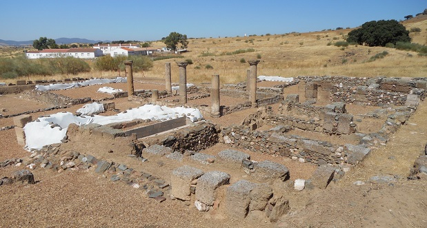

|
S I S A P O
En
Almodóvar del Campo se halla la Bienvenida. El asentamiento se remonta a fines
del VII a.e.c. Ocupado también por los íberos, alcanzó su mayor apogeo en época
romana, siendo identificada como la ciudad de "Sisapo", vinculada a las
explotaciones mineras de cinabrio y plata, abundantes en su entorno.
En tiempos de Augusto se impulsó la explotación de la minas de Castulo y Sisapo.
Es cuando se consolida una nueva trama urbana de la que conocemos una calle
porticada que discurre en dirección N-S -cardo-, un conjunto de tabernae y una
domus, denominada de las Columnas Rojas.
La ciudad tuvo una extensión aproximada de 10 ha. y estaba rodeada por una
muralla de más de 3 m. de ancho con unas 28 torres.
La existencia de ruinas antiguas en la Bienvenida se conocía desde el siglo XVI
en tiempos del rey Felipe II, y muchos escritores de fines del siglo XIX y
principios del siglo XX dieron también noticias de tan importantes restos
arqueológicos.

|